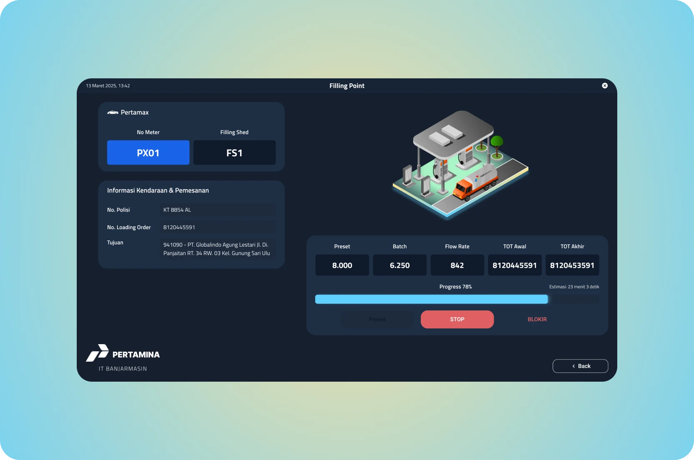
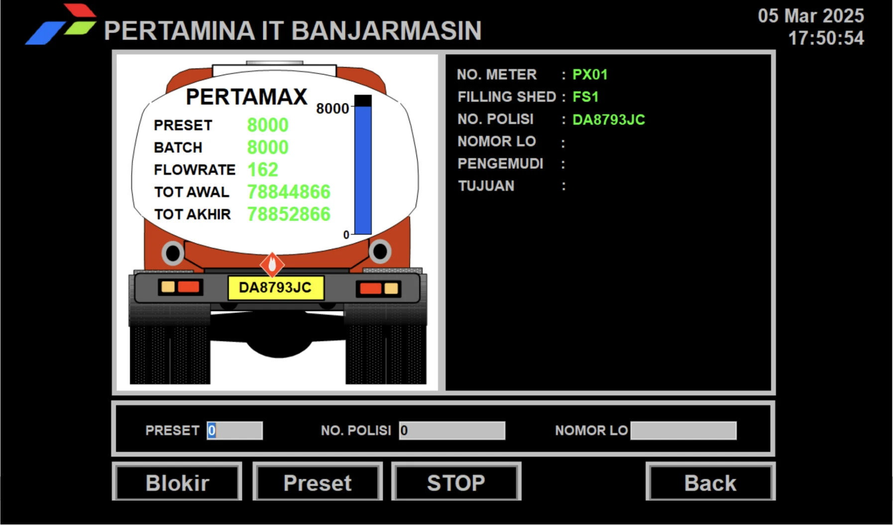

Making fuel depot operations easier to read
A redesign of a legacy control screen for Pertamina's Banjarmasin fuel depot, grouped around the operator's task, with animation that shows loading progress.
My part: I worked on it alone, from regrouping the information to the visual design and the loading animation.
- Role
- Product and interaction designer
- Timeline
- Five-day brief
- Context
- Fuel loading operations
- Platform
- Desktop control screen

The problem: status was there, but hard to read
The legacy interface used a dated style and scattered information. Operators had to work harder to read the status of fuel loading and to see how the controls related to each other.

The design: grouped around the task
I regrouped related information, removed visual clutter and used a dark interface for clearer contrast in a control room. What operators need to understand and act on during loading comes first.

Motion that reports progress
The tanker illustration and loading animation make the process easy to follow at a glance. Here, motion reports system status; it is not decoration.
Scope and limits
This was a five-day brief with about twelve hours of design work. No usability results were measured, so this case shows the reasoning rather than a quantified improvement.